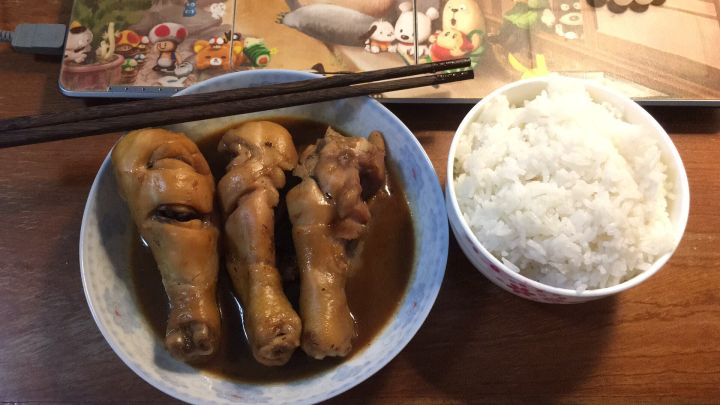

我家的猫不是第一次过夏，至少打我养它以来，夏天的行为也差不多...阅读全文 »
或者说它的行为一年四季都差不多，压根就可以用“睡”这一个字来概括，它不是因为夏天到了 才少吃少动整天瘫作一堆，而是长年累月沉溺于翡翠梦境，以至于作为一只普通家猫体重直冲十四斤。我各种诱使它运动减肥，然而并没有什么猫腩用。别人家猫瘫地板，它这会儿如同猫皮靴般缠绕在我脚上，我正在蓄力准备把它踢出去，太特么热了。而如果不许它上脚，一般来说它选择的另外两个地方分别是床和猫窝。它倒不怎么晒太阳，因为被遗弃的经历使它厌恶外界，因此也不很喜欢靠近窗口。我也是个比较耐热的人，因此我夏天不怎么用空调，一般使用凉席和风扇。但对我的猫来说，这套行头仍然凉且硬的过分，因此它对我的凉席非常不满，自从我开始铺席子，它就把自己的床上活动范围限定于枕头与抱枕之上
拖着一肚皮的肥肉在我的枕上蠕动蠕动蠕动， 蠕动。以至于我晚上经常感觉自己戴了顶猫皮帽子，不得不醒来把它打走。一方面是热，另一方面，猫睡爽了会呼噜，但是这让我很不爽，我跟你说，那声音很吵的，会让你半夜梦到机车轰鸣。它也觉得频频被我打不是个事儿，所以也往往会离我远一点儿，选择猫窝。绒面夹棉的冬窝。我也给它准备了凉垫和竹筐，但它不屑一顾。我担心它钻在窝里会中暑，于是把窝压塌下去，让它只能睡在上面，不能拱在厚实的棉花中间。它勉强接受了这个设定。
关窗户没注意夹到了他的爪子，嗷的惨叫一声回头张大嘴准备咬...阅读全文 »
回头看到我愣了一下顿住了张大的嘴。跑到一边舔爪子了。
半夜要进被子我按住了被子边缘，一个劲刨不小心抓到了我脸，开灯吼了一通他委屈的跑去飘窗上睡觉了，想了半天觉得自己好像有点过分，喊了声努努，听见他飞奔过来途中不小心撞到桌上东西的声音。
因为出差送猫去朋友那里寄养，努努一去就躲沙发底下怎么喊都不出来，我快要走的时候到门口喊了声努努回家啦，嗖的一下就从沙发底下追出来看着我叫绕着蹭我腿。在外地跟朋友视频，努努还是躲在沙发底下不出来，把视频对着努努喊他，立刻从沙发下面钻出来蹭手机。
超市买的速冻鸡腿，做了仨，认认真真等他们回来一家三口一人一个...阅读全文 »
期间馋的不行，忍着，回来之后跟我说，超市的饲料鸡，不吃，我说我没舍得吃呢，都凉了。然后我妈说那你热热吃吧，反正我们不吃，也不能给狗吃。
然后跟她的狗儿子说，咱要吃走地鸡对不对呀～我们才不吃饲料鸡呢～
它叫薯片，是个俊俏的小哥哥。薯片平时的待遇其实不是这样的，只是吃我爸给它专门做的猪肝而已。真的，没什么大不了。它也不喜欢这种待遇，每次都很嫌弃地嗦干净汁，把渣吐掉。你看嘛，有什么好羡慕的。真的，一点都不羡慕。
